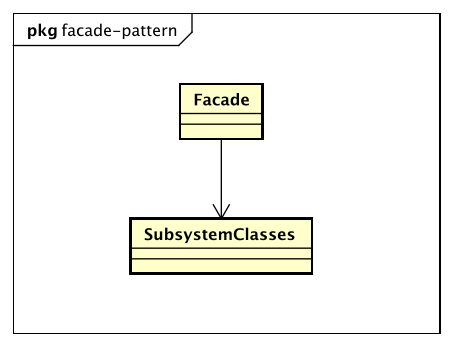

设计模式
门面模式（Facade Pattern）
Provide a unified interface to a set of interfaces in a subsystem. Facade defines a higher-level interface that makes the subsystem easier to use.
要求一个子系统的外部与其内部的通信必须通过一个统一的对象进行。门面模式提供一个高层次的接口，使得子系统更易于使用。

Facade门面角色
客户端可以调用这个角色的方法。此角色知晓子系统的所有功能和责任。一般情况下，本角色会将所有从客户端发来的请求委派到响应的子系统去，也就是说该角色没有实际的业务逻辑，知识一个委托类。
Subsystem子系统角色
可以同时有一个或者多个子系统。每一个子系统都不是一个单独的类，而是一个类的集合。子系统并不知道门面的存在。对于子系统而言，门面仅仅是另外一个客户端而已。
门面模式的优点
- 减少系统的相互依赖
- 提高了灵活性
- 提高安全性
门面模式的缺点
门面模式的缺点就是不符合开闭原则，对修改关闭，对扩展开放。
门面模式的使用场景
- 为一个复杂的模块或子系统提供一个供外界访问的接口
- 子系统相对独立--外界对子系统的访问只要黑箱操作即可
- 预防低水平人员带来的风险扩散